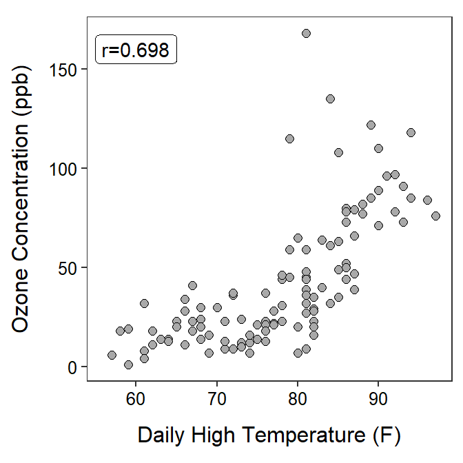

Researches examined air quality daily in New York from May to September 1973. The recorded the maximum daily temperature (oF) and ozone concentration (ppb) for each day. Use the results in the scatterplot below to perform a bivariate EDA.

Climate researchers examined the relationship between global temperature anomaly and the concentration of CO2 in the atmosphere. Temperature anomaly data was recorded as the Global Land-Ocean Temperature Index from the Goddard Institute of Space Studies (GISTEMP). It is reported in units of 1/100 of a degree centigrade increase above the 1950-1980 mean. The CO2 data are from The Earth System Research Laboratory of the National Oceanic and Atmospheric Administration (NOAA). Specifically, these data are a record of annual mean atmospheric CO2 concentration at Mauna Loa Observatory, Hawaii, and constitute the longest continuous record of atmospheric CO2 concentration. This remote location at high altitude in Hawaii was chosen because it is relatively unaffected by any local emissions and so is representative of the global concentration of a well-mixed gas like CO2. These observations were started by C. David Keeling of the Scripps Institution of Oceanography in March of 1958 and are often referred to as the Keeling Curve. Data are reported as a dry mole fraction defined as the number of molecules of carbon dioxide divided by the number of molecules of dry air multiplied by one million (ppm).
Our goal in the next module will be to determine if the variability in the temperature anomaly records can be reasonably explained by the CO2 values in the same year. However, in this module, use the results below to perform a bivariate EDA for these data.